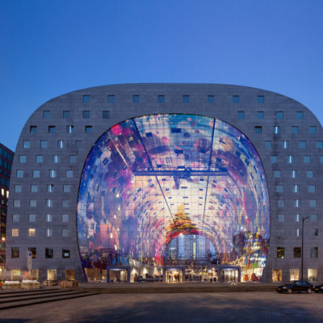

De Markthal
De Markthal te Rotterdam is een woon- en
winkelgebouw met inpandige markthal, gesitueerd tussen de straten Dominee Jan Scharpstraat,
Grotemarkt, Westnieuwland en Verlengde Nieuwstraat.
De opening vond op 1 oktober 2014 plaats
door koningin Máxima. Naast een overdekte markt herbergt het complex 228 appartementen, 4600 m²
winkelruimte, 1600 m² horeca en een parkeergarage voor meer dan duizend auto's.
De Markthal
is
een ontwikkeling van Provast, in eigendom van Klépierre (retail), Vesteda (woningen) en de
gemeente
Rotterdam (parkeergarage).
Architectuur
De Markthal is ontworpen door architectenbureau MVRDV.
Het grijze natuurstenen gebouw heeft
een
boogvorm als van een hoefijzer.
Tussen de binnen- en buitenboog zijn de genoemde
appartementen
gebouwd.
Het gebouw heeft aan beide kopse kanten een glazen gevel.
De gelamineerde
glaspanelen, waarvan de meeste vierkant en 148,5 centimeter breed zijn, zijn gehangen in een
kabelnetgevel van 34 meter hoog en 42 meter breed, die daarmee de grootste van Europa is.
Iedere
gevel telt 26 verticale en 22 horizontale kabels.